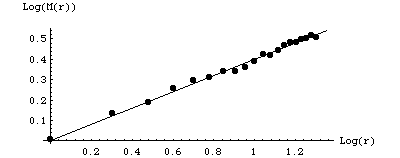
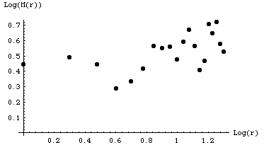
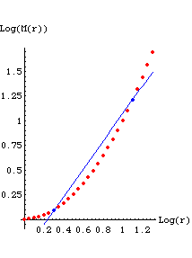

In these experiments we investigate the dimension of approximately spherical objects. We assume that there is a power law relationship between the mass and radius of the object:
M = k rd,
where M is the mass, r is the radius, k is a constant of proportionality, and d is the dimension.
Examples of this relation are presented in the discussion of mass dimension.
To find the dimension of the object, we need to solve this equation for d. Taking logs of both sides we obtain
log(M) = log(k) + dlog(r).
Solving for d gives
d = (log(M) - log(k))/log(r).
For mathematical objects of infinite extent, we evaluate d by taking the
limit as r approaches infinity. Because k is a constant,
d = limr → ∞ log(M)/log(r).
Physical objects are of finite extent, so instead of taking this limit we go back to the first log equation
log(M) = d log(r) + log(k),
and note it is a linear equation in the form
| Example 1 Suppose these values of |
| Plotting |
|  |
| We see the points are reasonably well-fit with a line of slope 0.4, so we can
say the data support the claim this object has mass dimension |
| Example 2 Suppose these values of |
| Plotting |
|  |
| We see the points are not reasonably well-fit with any line, so we can say the data do not support the claim this object has a well-defined mass dimension. |
| Finally, though the point shouldn't need to be mentioned, we must point out that no deduction at all can be drawn from a graph having only two points. For example, suppose the underlying data are the red points in this graph, but only the two blue points have been measured. Given these two points, certainly one can draw a line passing through them. Does it follow that all subsequently measured data points will lie near to this line? Not at all. |
|  |
| In general, the larger the range of r-values over which a power law scaling is observed, the better the claim that the underling process is fractal. |
Return to Paper Ball and Bean Bag Dimensions